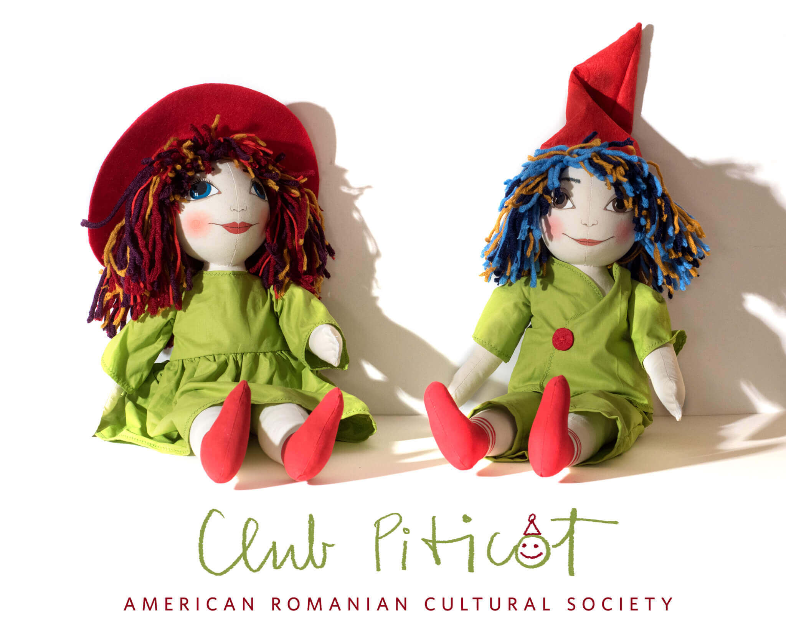

Club Piticot
A Romanian Heritage Program for Children (Ages 3-13)
Program Coordinator
Elizabeta was born in Northern Romania where she grew up very attached to her grandparents. After high school, she moved to Bucharest where she studied physics and worked for an insurance company. She moved to the US with her family in 2008, and spent a few years just playing with her kids. The love of being around children made her look for opportunities to work with them. She worked and volunteered in different early childhood education programs. She is currently working with Bellevue School District in its Early Learning Programs. She obtained an AAS-T in Early Childhood Careers and is enrolled for a BA in Mathematics.
Objectives and Scope
- Address the needs of the Romanian community in the Greater Bellevue and Seattle Area
- Target a foundational demographic (preschool and grade school) for preserving Romanian heritage in the PNW
- Build on and extends ARCS's existing educational and heritage programs
Program Benefits/Goals
- Supports children and their families in developing communication skills in Romanian and preserves their cultural heritage
- Foundational program for developing reading and writing ability in Romanian
- Lays the groundwork for formal language learning; early-childhood bilingualism puts future students on track for getting Washington State’s Seal of Biliteracy Certification
- Fosters cultural sensitivity, respect for heritage cultures, and the cultural diversity of the PNW
- Offers linguistic and cultural continuity for the Romanian community in Washington State
- Open to families of all cultural backgrounds that would like to explore the Romanian language and culture

Program Structure
- Monthly meetings (Saturday afternoons are preferred), approximately 2 to 2.5 hours
- Work in age-appropriate groups (children will be split in 2 to 3 small groups based on their age)
- Program relies on a close collaboration with the parents, who will be an active part of the club
Activities will include:
- Reading stories: Romanian folk literature and Romanian authors
- Singing songs, nursery rhymes, performing sketches
- Playing games
- Arts and crafts
Materials:
- Books
- Worksheets
- Flashcards
- Board games
- Puppets
- Other safe and age-appropriate materials
Collaboration with Bellevue Library and KCLS
We value KCLS efforts and mission to promote safe spaces for community-building and inter-cultural dialogue.
Past collaborations between ARCS and Bellevue Library include events such as:
- "Romanian American Cultural Intersections" in 2015
- The 2nd Generation Awards Gala and Photo Exhibit in 2016 (2017 TBA)
The Romanian Community of the Greater Seattle Area is concentrated in and around Bellevue, Redmond, and Kirkland. By hosting Club Piticot, Bellevue library will provide much-needed support and a welcoming, conveniently-located meeting space to an underrepresented cultural minority in King County.